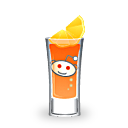

글라스컵
맛있는 음료를 담을 수 있는 글라스 리스트
디그 아세요? 오렌지 위를 잘 보세요. digg가 있답니다.

furl 잔입니다. 목이 길고 배가 적당히 부른게 특징이죠~

오렌지가 돋보이는 레딧잔은 한번 마시면 중독되요
오후엔 와이파이가 되는 위치에서 시원한 맥주한잔 어때요?
- 
스마일하게 스매싱하고 싶을때 우린 이 잔을 선택합니다.

맛있어 보이나요? 뭐가 있을까요?
트위터를 즐기는 연인라면 이잔으로 해봐요.

첨단기술이 녹아 있는 평범해 보아는 잔이죠
트위터를 즐기는 연인라면 이잔으로 해봐요.

체리처럼 상큼한 맛을 기대하신다면 과감하게 잔을 드세요

아참 스트럼블 잔이 빠졌네요. 메론색의 특별한 잔

오늘 저녁 유튜브로 영화한편 어때요